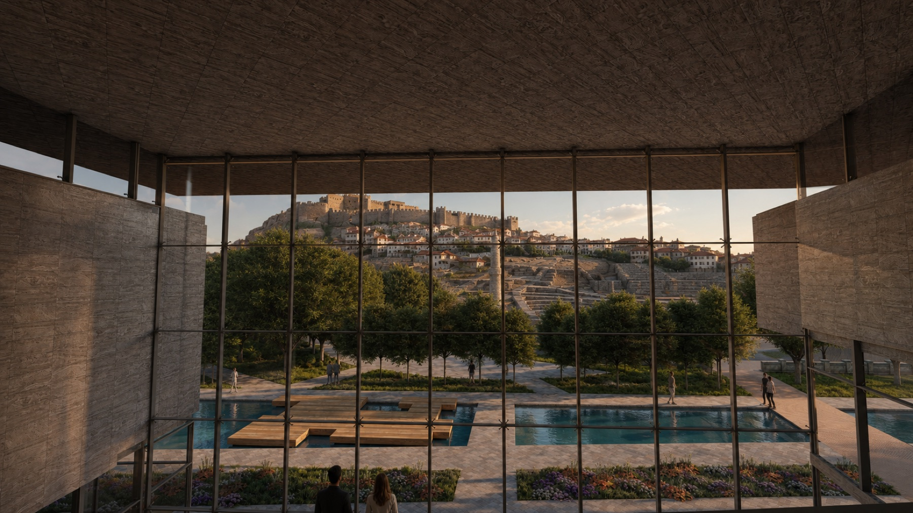
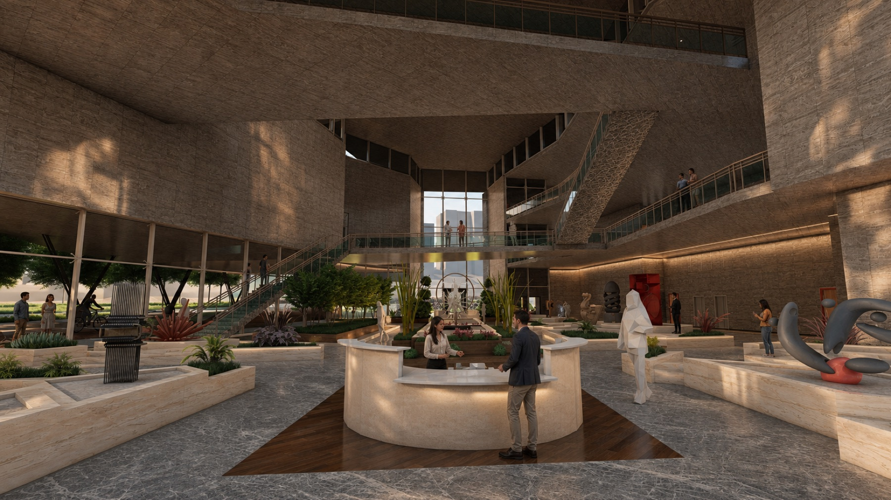
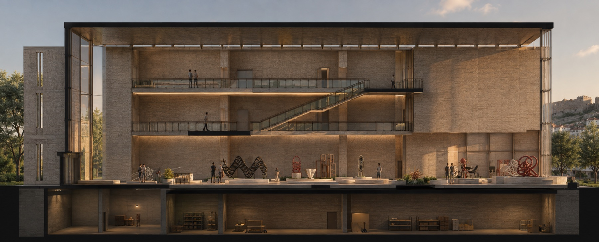
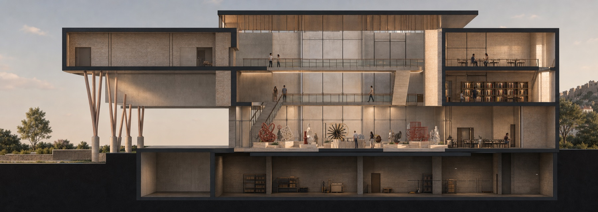

A01 · Cultural Center · Ankara
A cultural route between the city and its archaeological landscape
A public cultural center opposite the Roman Theatre and below Ankara Castle, organised as a sequence of exhibition, making, gathering, and landscape spaces.

Project idea
Architecture as a connection across time
The site sits between the dense historic fabric around Ankara Castle, the Roman Theatre, Bentderesi, and the movement of contemporary Ulus. The proposal treats the building and landscape as one continuous public route rather than an isolated cultural object.
A linear water element extends through the site as an orientation device. Exhibition islands, workshops, a restaurant, and open gathering areas occupy the ground plane, while ramps and bridges create elevated paths through the large interior volume. Framed views keep the castle and archaeological landscape present throughout the visitor experience.
Spatial system
A layered interior landscape
The main hall combines a free plan with a clear circulation armature. Independent exhibition islands allow changing displays, while the upper galleries provide longer views across the collection and toward the city. Warm stone, exposed concrete, dark metal, water, and planting establish a material relationship with Ankara without imitating its historic architecture.


